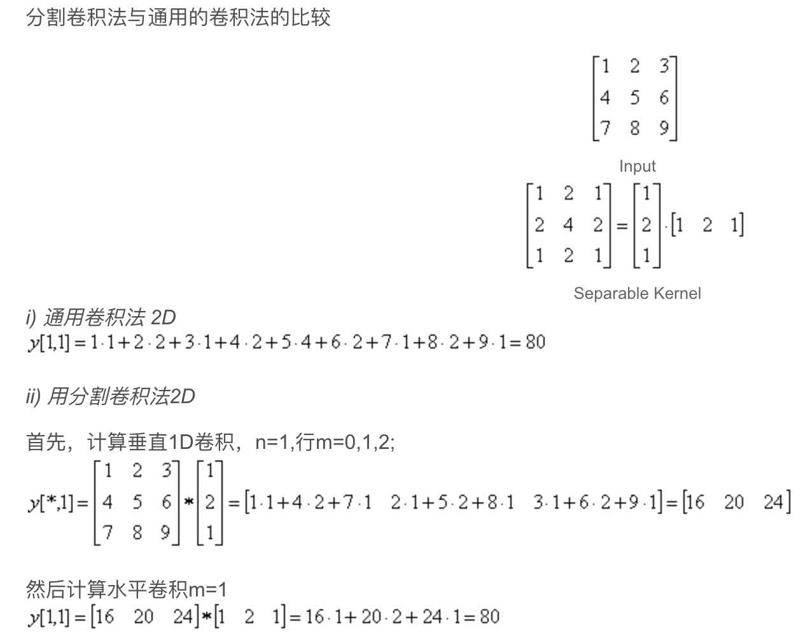

1.1 图像处理
1.1 点算子
操作特征：每个像素的输出值只取决于相应的输入像素值。
1.1.1 像素变换
一般的图像处理算子是指一个或多个输入图像到一个输出图像的函数，在连续域中可表示为
$x$属于函数的$D$维定义域，函数$f$和$g$在某个值域上操作。对于离散图像，定义域由有限个像素位置组成，$x=(i,j)$，此时$g(i, j)=h(f(i, j))$
常用的两个点算子是乘以和加上一个常数，$g(x)=af(x)+b$，$a$称为增益参数，$b$称为偏差参数。$a,b$也可以随着空间位置的不同而变化。
二元算子是线性混合算子：
$\alpha \in[0,1]$，此算子可以实现两幅图像或视频间的时间上的淡入淡出。
伽马矫正是图像预处理阶段经常使用的非线性算子，它可以去除输入辐射量和量化的像素值之间的非线性映射
$\gamma$经常取2.2
1.1.2 彩色变换
彩色变换是对彩色图像的三个通道分别操作，比如色彩平衡（白炽光光照的补偿）可以通过对每个通道乘以不同的尺度因子来实现，也可以采用更复杂的处理过程，将RGB映射到XYZ彩色空间。
1.1.3 合成与抠图
覆盖算子：$C=(1-\alpha)B+\alpha F$，这个算子通过$(1-\alpha)$因子减弱了背景图像$B$的影响，加入了对应于前景层图像$F$的彩色值（和不透明度，一共4维）
1.1.4 直方图均衡化
见其他笔记
1.2 线性滤波
何谓图像滤波？
图像滤波即在尽量保留图像细节特征的条件下对目标图像的噪声进行抑制，是图像预处理中不可缺少的操作，其处理效果的好坏将直接影响到后续图像处理和分析的有效性和可靠性。
信号或图像的能量大部分集中在幅度谱的低频和中频段是很常见的，而在较高频段，感兴趣的信息经常被噪声淹没。因此一个能降低高频成分幅度的滤波器就能够减弱噪声的影响。
低通滤波能保留图像的大致轮廓信息是因为，一张图像所记录到的主要信息（由于受到关照等必然因素的影响）在图像上灰度值的变化是缓慢的，因此主要信息集中在低频区域。而噪音等偶然因素是突然附加到图像上使得灰度值快速变化，而且密密麻麻，这导致N个像元内，灰度值的变化不仅频繁，而且变化的范围还很大。因此，噪音就位于图像频谱的高频区域，表现为高灰度值。
图像滤波的目的
一是抽出对象的特征作为图像识别的特征模式;
二是为适应图像处理的要求，消除图像数字化时所混入的噪声。
图像滤波的要求
一是不能损坏图像的轮廓及边缘等重要信息;
二是使图像清晰视觉效果好。
邻域算子（局部算子）是利用给定像素周围的像素的值决定次像素的最终输出值。可用于局部色调调整，还可用于图像滤波，实现图像的平滑和锐化，图像边缘的增强或者图像噪声的去除。
关于滤波器，一种形象的比喻法是:我们可以把滤波器想象成一个包含加权系数的窗口，当使用这个滤波器平滑处理图像时，就把这个窗口放到图像之上，透过这个窗口来看我们得到的图像。如下邻域算子的介绍。
线性滤波算子是一种常用的邻域算子，指用不同的权重结合一个小的邻域内的像素。
其中权重核或掩膜$h(k,l)$常称为”滤波系数”，上面公式可简写为：$g=f \otimes h$
上述公式也常变形为：
此公式称为”卷积公式”，记做$g=f * h$
相关和卷积运算都可以用矩阵和向量的乘法来表示，如：
填塞（边界效应）
如上图所示的卷积矩阵运算会产生边界效应，即采用这种形式的图像滤波会使角点处的像素变黑（乘积为0）。主要是因为当卷积核超出原始图像边界时，原始图像边界外的部分被认为是有效的，并用0填充（0为黑）
为了抵消这种效应，可以采用一些对图像填塞或扩展的模式
- 0填塞：将原图像之外的像素的值设置为0
- 常数填塞（边框彩色）：在原图像外的像素的值设置为确定的边界值
- 夹取填塞（复制或夹取边缘）：不限定地复制边缘像素的值
- 重复填塞：以环状形态环绕图像进行循环
- 镜像填塞：像素围绕图像边界进行镜像反射
- 延长：通过在边缘像素值中减去镜像信号的方式延长信号
1.2.1 可分离的滤波
对于卷积运算的实现，每个像素需要$K^2$次操作（乘-加），$K$是卷积核的大小。在许多情况下，这种运算可以采用如下计算方式来大幅度提高运算速度：先用一维行向量进行卷积，接着用一维列向量进行卷积。这样每个像素总共需要$2K$次操作。如果一个卷积核可以采用上述方式进行计算，则称其为可分离的。

如果给定一个核函数$K$，如何判断它是不是可分离的呢？更直接的方法是将$2D$核函数看成一个$2D$矩阵$K$并且对其进行奇异值分解（SVD）
当仅有第一个奇异值$\sigma_0$是非$0$值时，核函数是可分离的，$\sqrt{\sigma_{0}} u_{0}$和$\sqrt{\sigma_{0}} v_{0}^{T}$分别提供了垂直核函数和水平核函数。
1.2.2 带通和导向滤波器
高斯滤波器平滑图像：
Laplacian算子（带通滤波器）对二维图像求二阶导数（无方向）:
LoG（Laplacian of Gaussian）算子：首先用高斯核平滑图像，再用Laplacian算子作用于图像。
Sobel 算子是一个主要用作边缘检测的离散微分算子 (discrete differentiation operator)。 Sobel算子结合了高斯平滑和微分求导，用来计算图像灰度函数的近似梯度。在图像的任何一点使用此算子，将会产生对应的梯度矢量或是其法矢量（带方向）。
Sobel算子根据像素点上下、左右邻点灰度加权差，在边缘处达到极值这一现象检测边缘。对噪声具有平滑作用，提供较为精确的边缘方向信息，边缘定位精度不够高。当对精度要求不是很高时，是一种较为常用的边缘检测方法。https://my.oschina.net/freeblues/blog/727561
区域求和表
区域求和表是指一定区域内所有像素的值的和：
从图像的左上角元素开始递归计算，则区域求和的增量公式，即区域求和表的每个元素值为：
图像$s(i,j)$也被称为积分图像。在计算机视觉中，人脸检测可利用区域求和表来计算简单的多尺度上的底层特征。
（a）为原始图像；（b）为区域求和表
递归滤波器
区域求和的增量公式是递归滤波器的一个典型例子。递归滤波器是指输出值取决于前一个滤波器的输出值。这种滤波器又称为”无限脉冲响应（IIR）”，因为对于脉冲信号（只有一个非零值），IIR的输出是无限的。本章前面所研究的用一个有限区域核卷积图像的滤波器称作”有限脉冲响应（FIR）”。
IIR滤波器常用于可分离的一维滤波阶段，计算大范围的平滑核。
1.3 更多的邻域算子
1.3.1 非线性滤波
前面考虑的是线性滤波，然而在很多情况下，使用邻域像素的非线性组合可能会得到更好的效果。例如当噪声是散粒噪声，而不是高斯噪声，即图像偶尔会出现很大的值。这种情况下，用高斯滤波器对图像进行模糊，噪声像素是不会被去除的，只会转换为更加柔和但仍然可见的散粒。
中值滤波
对于散粒噪声这种情况，使用中值滤波是一个较好的选择。中值滤波器选择每个像素的邻域像素的中值作为输出。这个邻域称之为窗，窗开的越大，输出的结果越平滑，但过大的窗也可能把我们有用的信号特征给抹除。由于散粒噪声通常位于邻域内正常值的两端，故中值滤波可以对这类异常像素进行过滤。
中值滤波有个不足，即由于中值滤波只选择一个像素作为输出像素，所以一般很难有效去除规则的高斯噪声。
$\alpha$截尾均值滤波会对散粒噪声和高斯噪声做一个折衷，具体做法是指去除百分率为$\alpha$的最小值和最大值后剩下的像素的均值。
另一种方法是加权中值滤波：加权中值滤波是将窗口内的每一个像素都乘上一个相应的权值，然后利用乘上权值后的值进行排序，取中值替换中心元素的灰度值即可。中值滤波可以看做是每个像素的权值都是1的加权中值滤波。权重目标函数最小化如下：
双边滤波器
双边滤波器与高斯滤波器相比，对于图像的边缘信息能够更好的保存，其原理为一个与空间距离相关的高斯函数与一个灰度距离相关的高斯函数相乘。等于是双边滤波器既结合了空间距离信息，又结合了灰度距离（值域）信息。
在双边滤波器中，输出像素的值依赖于邻域像素的值的加权组合：
权重系数$w(i,j,k,l)$取决于定义域核
和依赖于数据的值域核
的乘积。它们相乘后，就会产生依赖于数据的双边权重函数
1.3.2 形态学
形态学，即数学形态学(mathematical Morphology)，是图像处理中应用最为广泛的技术之一，主要用于从图像中提取对表达和描绘区域形状有意义的图像分量，使后续的识别工作能够抓住目标对象最为本质（最具区分能力一most discriminative)的形状特征，如边界和连通区域等。同时像细化、像素化和修剪毛刺等技术也常应用于图像的预处理和后处理中，成为图像增强技术的有力补充。在数字图像处理中，形态学是借助集合论的语言来描述的。
设有两幅图像A, S。若A是被处理的对象， 而S是用来处理A的， 则称S为结构元素。结构元素通常都是一些比较小的图像， A与S的关系类似于滤波中图像和模板的关系。
以下介绍的是二值图像的基本形态学操作，包括腐蚀、膨胀、以及开、闭运算。所有形态学运算都是针对图像的前景物体进行的，在二值图像中，默认白色（接近255）为前景物体，黑色（接近0）为背景。
腐蚀
腐蚀和膨胀是两种最基本的形态学操作，其他的形态学算法都是由这两种基本运算复合而成的。
腐蚀的作用“ 顾名思义，腐蚀能够消融物体的边界，而具体的腐蚀结果与图像本身和结构元素的形状有关。如果物体整体上大于结构元素，腐蚀的结构是使物体变“ 瘦”一圈，而 这一圈到底有多大是由结构元素决定的：如果物体本身小于结构元素， 则在腐蚀后的图像中物体将完全消失：如物体仅有部分区域小于结构元素〈如细小的连通3，则腐蚀后物体会在细连通处断裂，分离为两部分。
随着腐蚀结构元素的逐步增大，小于结构元素的物体相继消失。由于腐蚀运算具有上述的特点，可以用于滤波。选择适当大小和形状的结构元素，可以滤除掉所有不能 完全包含结构元素的噪声点。然而，利用腐蚀滤除噪声有一个缺点，即在去除噪声点的同时，对图像中前景物体的形状也会有影响，但当我们只关心物体的位置或者个数时，则影响不大。
膨胀
膨胀的作用和腐蚀相反， 膨胀能使物体边界扩大， 具体的膨胀结果与图像本身和结构元素的形状有关。膨胀常用于将图像中原本断裂开来的同一物体桥接起来， 对图像进行二值化之后， 很容易使一个连通的物体断裂为两个部分， 而这会给后续的图像分析（如要基于连通区域的分析统计物体的个数〉造成困扰，此时就可借助膨胀桥接断裂的缝隙。
开运算
开运算和闭运算都由腐蚀和膨胀复合而成， 开运算是先腐蚀后膨胀， 而闭运算是先膨胀后腐蚀。
一般来说， 开运算可以使图像的轮廓变得光滑， 还能使狭窄的连接断开和消除细毛刺。 如图8.11所示， 开运算断开了团中两个小区域间两个像素宽的连接〈断开了狭窄连接〉，并且去除了右侧物体上部突出的一个小于结构元素的2×2的区域〈去除细小毛刺〉： 但与腐蚀不同的是， 图像大的轮廓并没有发生整体的收缩， 物体位置也没有发生任何变化。
根据图8.12 的开运算示意图， 可以帮助大家更好地理解开运算的特点。为了比较， 图中也标示出了相应的腐蚀运算的结果：
闭运算
闭运算同样可以使轮廓变得光滑， 但与开运算相反， 它通常能够弥合狭窄的间断， 填充小的孔洞。

1.3.3 距离变换
图像的距离变换实现了像素与图像区域的距离变换，对于变换后的距离图像来说，图像中的每个像素的灰度值为该像素与距离其最近的背景像素间的距离，也就是说，给每个像素赋值为离它最近的背景像素点与其距离。这样可以实现二值图像转化为灰度图像。
根据度量距离的方法不同，距离变换有几种不同的方法，假设像素点$P_1(x_1,y_1),P_2(x_2,y_2)$计算距离的方法常见的有：
1、欧式距离，$Distance=\sqrt{(x_1-x_2)^2+(y_1-y_2)^2}$
2、曼哈顿距离，$Distance=|x_2-x_1|+|y_2-y_1|$
距离变换的一般步骤如下：
1、将输入图片转换为二值图像，前景设置为1，背景设置为0；
2、自左上起依次进行距离变换：
(a)为原始的二值图像，(b)自顶向下扫描，距离变换，(c)递归计算，(d)距离变换的结果
1.3.4 连通量
1.4 傅里叶变换
傅立叶变换公式，在连续域中
在离散域中
傅立叶变换的性质：
傅立叶变换对：
图像处理领域用到的傅里叶变换是二维的（长宽方向进行离散傅立叶变换），其目的是得到空间图像的频率分布情况，之后在频率域对图像进行各种处理可以有目的地实现很多功能。如降噪是弱化频率过高的像素点，图像压缩是对图像高频部分的信息进行简化处理，其余的应用还有图像边缘增强、纹理分析等。DC在二维图像信号中表示整幅图像的平均亮度。二维傅里叶图谱中越亮的点对应图像中对比度越大的点，原图频率越集中，对应的频谱图中亮点就越集中。
1.4.3 维纳滤波
在数学应用上，对于运动引起的图像模糊，最简单的方法是直接做逆滤波，但是逆滤波对加性噪声特别敏感，使得恢复的图像几乎不可用。最小均方差（维纳）滤波用来去除含有噪声的模糊图像，其目标是找到未污染图像的一个估计，使它们之间的均方差最小，可以去除噪声，同时清晰化模糊图像。
定义
给定一个系统
这里，$*$是卷积符号。
$x(t)$是在时间tt刻输入的信号（未知）
$h(t)$是一个线性时间不变系统的脉冲响应（已知）
$n(t)$是加性噪声，与x(t)x(t)不相关（未知）
$y(t)$是我们观察到的信号
我们的目标是找出这样的卷积函数$g(t)$，这样我们可以如下得到估计的$x(t)$：
这里$\hat x(t)$是$x(t)$的最小均方差估计。
基于这种误差度量，滤波器可以在频率域如下描述：
这里：
$G(f)$ 和$H(f)$是$g$和$h$在频率域ff的傅里叶变换。
$S(f)$是输入信号$x(t)$的功率谱。
$N(f)$是噪声的$n(t)$的功率谱。
上标$*$代表复数共轭。
滤波过程可以在频率域完成：
这里 $\hat X (f)$是 $\hat x (t)$的傅里叶变换，通过逆傅里叶变化可以得到去卷积后的结果$\hat x (t)$。
解释
上面的式子可以改写成更为清晰的形式
这里$H(f)$是$h$在频率域ff的傅里叶变换。$SNR(f)=S(f)/N(f)$是信号噪声比。当噪声为零时（即信噪比趋近于无穷），方括号内各项也就等于1，意味着此时刻维纳滤波也就简化成逆滤波过程。但是当噪声增加时，信噪比降低，方括号里面值也跟着降低。这说明，维纳滤波的带通频率依赖于信噪比。
推导
上面直接给出了维纳滤波的表达式，接下来介绍推导过程。
上面提到，维纳滤波是建立在最小均方差，可以如下表示：
这里$E$是期望。
如果我们替换表达式中的$\hat X(f)$，上面可以重新组合成
展开二次方，得到下式
然而，我们假设噪声与信号独立无关，这样有
并且我们如下定义功率谱
这样有
为了得到最小值，我们对$G(f)$求导，令方程等于零。
由此最终推出维纳滤波器。